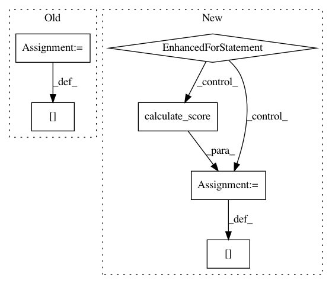

a7c583e298af07b975869f7046d0cafad89da520,autosklearn/evaluation/util.py,,calculate_score,#Any#Any#Any#Any#Any#Any#,18
Before Change
task=task_type)
score["pac_metric"] = pac_metric(csolution, cprediction,
task=task_type)
score["acc_metric"] = acc_metric(csolution, cprediction,
task=task_type)
else:
if task_type in REGRESSION_TASKS:
scoring_func = getattr(regression_metrics, metric)
After Change
cprediction)
else:
csolution, cprediction = normalize_array(solution, prediction)
for metric_ in CLASSIFICATION_METRICS:
score[metric_] = classification_metrics.calculate_score(
metric_, csolution, cprediction, task_type)
else:
if task_type in REGRESSION_TASKS:
cprediction = sanitize_array(prediction)
score = regression_metrics.calculate_score(metric,
In pattern: SUPERPATTERN
Frequency: 3
Non-data size: 6
Instances
Project Name: automl/auto-sklearn
Commit Name: a7c583e298af07b975869f7046d0cafad89da520
Time: 2015-11-02
Author: feurerm@informatik.uni-freiburg.de
File Name: autosklearn/evaluation/util.py
Class Name:
Method Name: calculate_score
Project Name: automl/auto-sklearn
Commit Name: 43762a5f340f1d9a202e8deb6f6c57673269c8ce
Time: 2017-02-14
Author: feurerm@informatik.uni-freiburg.de
File Name: autosklearn/evaluation/util.py
Class Name:
Method Name: calculate_score
Project Name: automl/auto-sklearn
Commit Name: 06b801033943e72755612117f276751f2ae4d5dc
Time: 2016-03-22
Author: a.domashnev@gmail.com
File Name: autosklearn/evaluation/util.py
Class Name:
Method Name: calculate_score